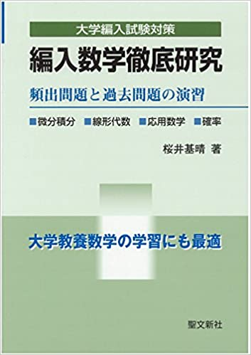
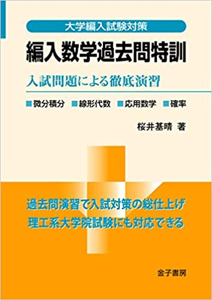
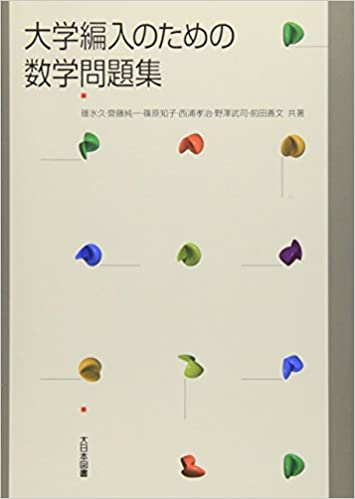

私は高専から東京大学工学部と大阪大学基礎工学部を受験し両方とも合格をいただきました.
数学,英語,物理を受験科目として勉強してきたのでそこで用いた参考書を紹介します.
このページでは特に数学で用いた参考書を紹介します.英語と物理については以下のリンクからご覧ください.
目次
おすすめ度★★★★★
編入数学徹底研究: 頻出問題と過去問題の演習

編入数学で一番有名な参考書です.編入数学で問われる範囲が幅広く掲載されていて比較的説明が丁寧です.
どの参考書を買うか迷ってる方はまずこの参考書をやりましょう.数学はこの本だけで十分という大学もあります.
章末問題には難問が多いです.
何周も繰り返すのもおすすめです.編入数学過去問特訓: 入試問題による徹底演習

色んな大学の過去問が大量に掲載されています.
徹底研究で一通り編入数学の基礎を習得したらこの過去問特訓で問題演習を繰り返しましょう.
問題演習に特化した本でとにかく色んな問題に触れることができるのでおすすめです.
おすすめ度★★★★
大学編入試験問題 数学/徹底演習(第3版)
分野ごとの解説のある程度あり,問題数も多い参考書です.
簡単な問題から何問まで幅広いです.人によってはこの参考書をこなすのがしんどいという方も少なくなさそうですが,かなり密度の濃い参考書です.
徹底研究と過去問特訓ではまだ足りないという人におすすめです.大学編入のための数学問題集 単行本

僕は上の3冊で問題演習は事足りていたのでこの参考書はほとんど手を出しませんでしたが,この本を中心に編入数学の勉強を進めている人も少なくありません.
おすすめ度★★★
細野真宏の確率が本当によくわかる本 (細野真宏の数学が よくわかる本)
高校範囲の確率の本です.東大を初め,高校の確率が出題される大学を受験する方には強くおすすめしたいです.
高校確率のほぼ全パターンの解法を学ぶことができて複雑な確率問題にかなり強くなれます.複素関数キャンパス・ゼミ 改訂7

複素関数を高専であまりしっかりとやらないのに編入試験に出るかたにはおすすめです.
徹底研究や過去問特訓でよく理解できないこともこの参考書に詳しく解説してあり,複素関数の色んな問題に対応できるようになります.
おすすめ度★★
- ベクトル・行列・行列式 徹底演習

編入試験の線形代数の範囲に特化した参考書で色んな過去問が掲載されています.
個人的には線形代数の問題は上記の参考書で十分だったのでほとんどやりませんでしたが,線形代数が苦手な人やこの本をしっかりやるとかなり克服できると思います.